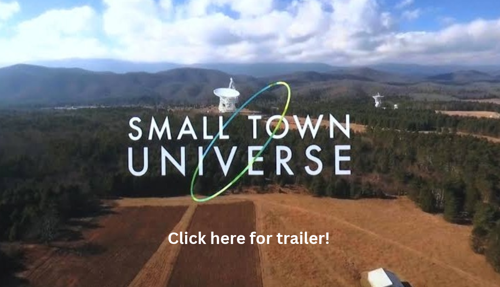

| Home |
| Take Action |
| Resources |
| Small Town Universe News |
| Media Gallery |
| Contact Us |

|
|
HomeGet Organized for the Green Bank Observatory!Sign up to learn more!#VoicesForGreenBank
Then we need your help ASAP! Call Congress and spread the word on social media!The NSF Fiscal Year 2027 Budget Request to Congress has specified the reduction in funding to the GBO from its annual budget of ~ $10 million to $3 million, which renders it no longer available for the many programs and research we’ve all benefited from – and further they have recommended “decommissioning and dispositioning” the facility which means either shutting down the Observatory or changing the operation of it as we know it. To read the NSF’s 2027 proposed budget, visit our Resources page for a link to it.We have the opportunity right now to use our voices to call Congress –to urge them to reject this proposal and to support full funding and continued operation of the Green Bank Observatory as a public science and education centered facility. The GBO is a vital part of West Virginia, providing over 100 jobs in a very rural setting, contributing approx. $30 million to WV’s economy, making groundbreaking discoveries with its state-of-the-art Green Bank Telescope and other equipment on site, and inspiring our next generation of researchers, innovators, and leaders with its unique and world-renowned education programs.Please visit our Take Action, Resources, and Social Media Guide pages to learn more about how you can help!Check out the award-winning documentary Small Town Universe Small Town Universe shares stories of love, loss, resilience, hope, scientific discovery, and the search for extraterrestrial intelligence in Green Bank, WV, a small town with a big telescope. But when government defunding threatens the telescope’s future, the town must decide what connections truly matter. STU debuted in April at the 2024 Cleveland International Film Festival in the historic Mimi Theater, where it won the Global Health Award, and was part of the Solar Eclipse day events that were made possible by a partnership between CIFF, the Great Lakes Science Center, and NASA’s Glenn Research Center. It has been and continues to go to multiple film festivals, local and virtual screenings, winning awards and audiences’ hearts across the country and beyond. Small Town Universe shows why the Green Bank Observatory is so vital to so many communities. And Now, their future is threatened again, even more so, so we need your help –please call Congress and let them know to keep Green Bank fully funded and operating to its fullest potential to continue delivering ground breaking research, keep a rural community thriving, and inspiring our next generation of explorers and leaders.Keep checking back for upcoming local and virtual screenings of Small Town Universe!To learn more about STU – visit Rescued Media’s webpage: https://smalltownuniversefilm.com/To request a screening, visit: https://www.smalltownuniversefilm.com/tune-in For more information about the Green Bank Observatory, their research, education opportunities, and ways to visit – please visit their website at: Green Bank Observatory Home |